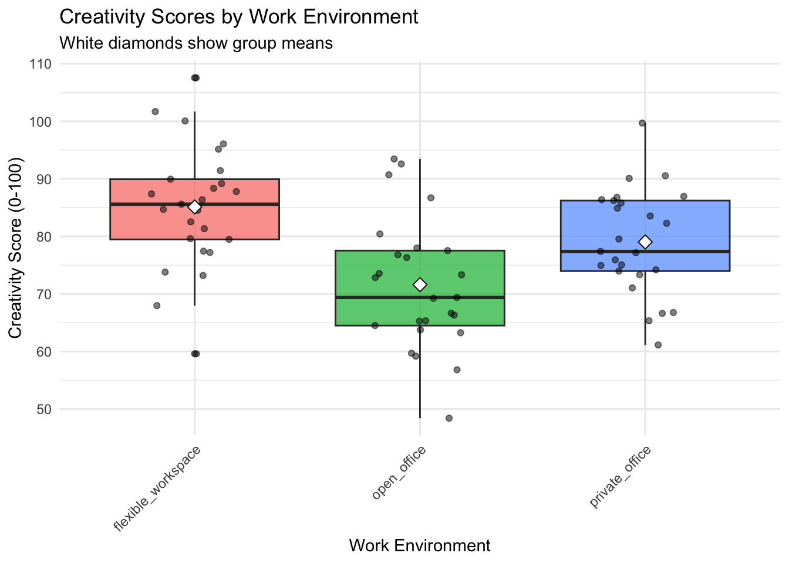
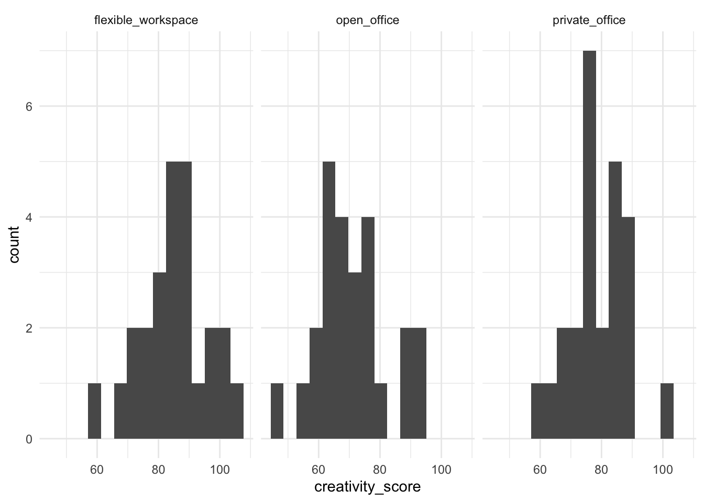
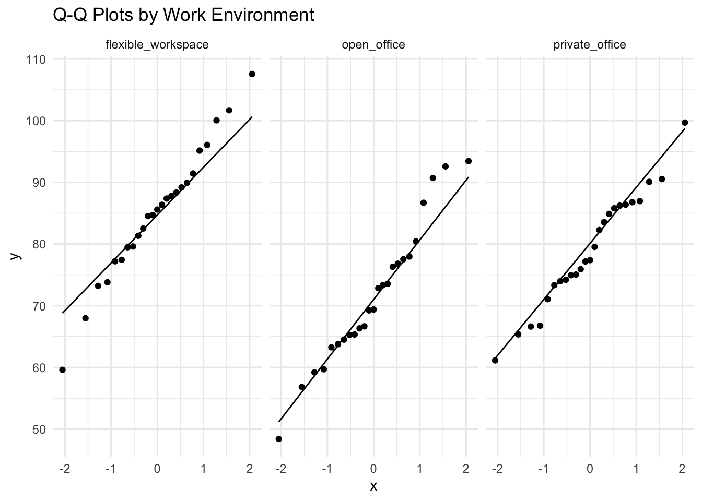
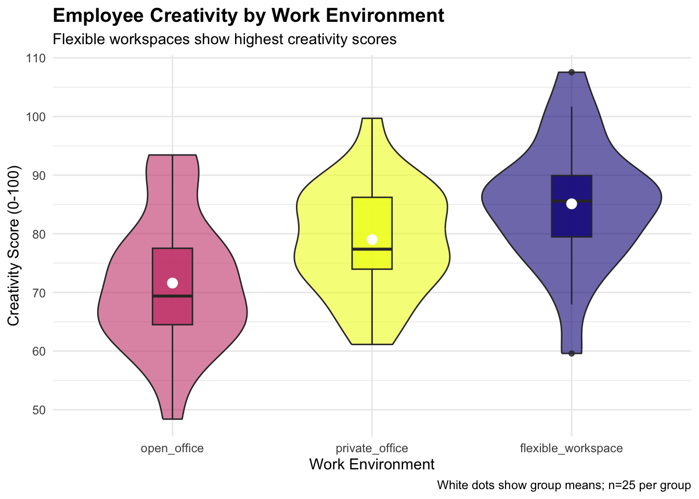

![]()
here::i_am("content/exercises/experiments/session13-Exercise-Solution.qmd")
library(here)
library(dplyr)
library(ggplot2)
library(car)
library(effectsize)
library(readr)Libraries and data used
creativity_study <- read_csv(here("content/exercises/experiments/employee_data.csv"))Step 1: Data Exploration
- Get basic descriptive statistics for the dataset
head(creativity_study)# A tibble: 6 × 5
employee_id work_environment creativity_score years_experience department
<dbl> <chr> <dbl> <dbl> <chr>
1 1 open_office 65.3 19 HR
2 2 open_office 69.2 15 Marketing
3 3 open_office 90.7 17 Finance
4 4 open_office 72.8 11 IT
5 5 open_office 73.6 7 HR
6 6 open_office 92.6 15 Marketing glimpse(creativity_study)Rows: 75
Columns: 5
$ employee_id <dbl> 1, 2, 3, 4, 5, 6, 7, 8, 9, 10, 11, 12, 13, 14, 15, 16…
$ work_environment <chr> "open_office", "open_office", "open_office", "open_of…
$ creativity_score <dbl> 65.27429, 69.23787, 90.70450, 72.84610, 73.55145, 92.…
$ years_experience <dbl> 19, 15, 17, 11, 7, 15, 6, 14, 7, 10, 5, 6, 16, 11, 4,…
$ department <chr> "HR", "Marketing", "Finance", "IT", "HR", "Marketing"…summary(creativity_study) employee_id work_environment creativity_score years_experience
Min. : 1.0 Length:75 Min. : 48.40 Min. : 1.00
1st Qu.:19.5 Class :character 1st Qu.: 70.22 1st Qu.: 7.00
Median :38.0 Mode :character Median : 77.53 Median :11.00
Mean :38.0 Mean : 78.58 Mean :10.97
3rd Qu.:56.5 3rd Qu.: 86.74 3rd Qu.:15.00
Max. :75.0 Max. :107.55 Max. :20.00
department
Length:75
Class :character
Mode :character
- Calculate mean and SD of creativity_score by work_environment
creativity_study %>%
group_by(work_environment) %>%
summarise(
n = n(),
mean = round(mean(creativity_score), 2),
sd = round(sd(creativity_score), 2),
min = min(creativity_score),
max = max(creativity_score),
.groups = 'drop'
)# A tibble: 3 × 6
work_environment n mean sd min max
<chr> <int> <dbl> <dbl> <dbl> <dbl>
1 flexible_workspace 25 85.1 10.7 59.6 108.
2 open_office 25 71.6 11.4 48.4 93.4
3 private_office 25 79.0 9.19 61.1 99.7- Create a visualization comparing creativity scores across environments
ggplot(
data = creativity_study,
mapping = aes(
x = work_environment,
y = creativity_score,
fill = work_environment)
) +
geom_boxplot(alpha = 0.7) +
geom_jitter(width = 0.2, alpha = 0.5) +
stat_summary(fun = mean, geom = "point", shape = 23, size = 3, fill = "white") +
labs(title = "Creativity Scores by Work Environment",
x = "Work Environment",
y = "Creativity Score (0-100)",
subtitle = "White diamonds show group means") +
theme_minimal() +
theme(
legend.position = "none",
axis.text.x = element_text(angle = 45, hjust = 1))
Step 2: Assumption Checking
- Check normality of creativity scores within each group
We can test for normality visually or by using specific tests. A common formal test is the Shapiro test, which can be conducted using the function shapiro.test().
To conduct the test for each group we can use the function by():
by(
# The data on which the test will be applied:
data = creativity_study$creativity_score,
# The groups that should be separated:
INDICES = creativity_study$work_environment,
# The function to be applied on these subsets:
FUN = shapiro.test)creativity_study$work_environment: flexible_workspace
Shapiro-Wilk normality test
data: dd[x, ]
W = 0.98913, p-value = 0.9928
------------------------------------------------------------
creativity_study$work_environment: open_office
Shapiro-Wilk normality test
data: dd[x, ]
W = 0.96745, p-value = 0.5812
------------------------------------------------------------
creativity_study$work_environment: private_office
Shapiro-Wilk normality test
data: dd[x, ]
W = 0.97686, p-value = 0.8166If the p-value if this test is larger than our threshold (usually 0.05), we cannot reject the hypothesis that data are normally distributed.
- Test equality of variances across groups
If variances differ across groups, we need to use different analysis tools. One common test to check if variances differ is Levene’s test, which tests the Null hypothesis of equal variances. We can use the function leveneTest() from the package car:
leveneTest(creativity_score ~ work_environment, data = creativity_study)Levene's Test for Homogeneity of Variance (center = median)
Df F value Pr(>F)
group 2 0.3253 0.7234
72 We have specified an ‘equation’ with our DV on the LHS and the variable defining the groups on the RHS. Since p-values are large, we cannot reject the Null of equal variances.
- Create histograms or Q-Q plots to visually inspect assumptions
ggplot(data = creativity_study, mapping = aes(x = creativity_score)) +
geom_histogram(bins = 15) +
facet_wrap(~work_environment) +
theme_minimal()
ggplot(creativity_study, aes(sample = creativity_score)) +
geom_qq() +
geom_qq_line() +
facet_wrap(~ work_environment) +
labs(title = "Q-Q Plots by Work Environment") +
theme_minimal()
Step 3: Statistical Analysis
We first conduct a ANOVA:
anova_model <- aov(
formula = creativity_score ~ work_environment,
data = creativity_study)
summary(anova_model) Df Sum Sq Mean Sq F value Pr(>F)
work_environment 2 2290 1144.9 10.47 0.000102 ***
Residuals 72 7870 109.3
---
Signif. codes: 0 '***' 0.001 '**' 0.01 '*' 0.05 '.' 0.1 ' ' 1Alternatively, we can use lm():
lm_model <- lm(creativity_score ~ work_environment, data = creativity_study)
anova(lm_model)Analysis of Variance Table
Response: creativity_score
Df Sum Sq Mean Sq F value Pr(>F)
work_environment 2 2289.8 1144.88 10.474 0.0001017 ***
Residuals 72 7870.0 109.31
---
Signif. codes: 0 '***' 0.001 '**' 0.01 '*' 0.05 '.' 0.1 ' ' 1Alternatively, we look at the original regression output, presenting results from a different perspective:
summary(lm_model)
Call:
lm(formula = creativity_score ~ work_environment, data = creativity_study)
Residuals:
Min 1Q Median 3Q Max
-25.5135 -6.2979 -0.4267 6.3461 22.4383
Coefficients:
Estimate Std. Error t value Pr(>|t|)
(Intercept) 85.113 2.091 40.70 < 2e-16 ***
work_environmentopen_office -13.513 2.957 -4.57 1.98e-05 ***
work_environmentprivate_office -6.091 2.957 -2.06 0.043 *
---
Signif. codes: 0 '***' 0.001 '**' 0.01 '*' 0.05 '.' 0.1 ' ' 1
Residual standard error: 10.45 on 72 degrees of freedom
Multiple R-squared: 0.2254, Adjusted R-squared: 0.2039
F-statistic: 10.47 on 2 and 72 DF, p-value: 0.0001017From the results we can see that there are significant differences across groups. But to know which groups really differ, we need to do a post-hoc comparison:
TukeyHSD(anova_model) Tukey multiple comparisons of means
95% family-wise confidence level
Fit: aov(formula = creativity_score ~ work_environment, data = creativity_study)
$work_environment
diff lwr upr p adj
open_office-flexible_workspace -13.512615 -20.5893415 -6.4358885 0.0000583
private_office-flexible_workspace -6.091277 -13.1680039 0.9854491 0.1055612
private_office-open_office 7.421338 0.3446111 14.4980641 0.0376828From the p-values we can see that:
- There is a significant difference between open office and flexible workspace environment, with the latter being more conductive for creativity
- There is a significant difference between private and open offices, with the latter being more conductive to creativity
- There is no statistically significant difference between private offices and flexible workspaces, although the latter have a higher creativity score averate
We can then check the standardized effect sizes:
effectsize::eta_squared(anova_model)# Effect Size for ANOVA
Parameter | Eta2 | 95% CI
--------------------------------------
work_environment | 0.23 | [0.09, 1.00]
- One-sided CIs: upper bound fixed at [1.00].The value for \(\eta^2\) means that the work environment expalains 23% of the variance in the creativity score - a major factor. This interpretation is further supported if we remember Cohen’s classification of effect sizes:
- Small effect: \(\eta^2 \approx 0.01\)
- Medium effect: \(\eta^2 \approx 0.06\)
- Large effect: \(\eta^2 \approx 0.14\)
This suggests that not only is our result statistically significant (as also demonstrated by the results above), but it is also practically meaningful as we witness a large effect according to Cohen’s classification.
And the confidence interval suggests that even in very, very conservative terms we would still witness a medium sized effect!
Step 4: Interpretation and Visualization
ggplot(creativity_study, aes(x = reorder(work_environment, creativity_score),
y = creativity_score, fill = work_environment)) +
geom_violin(alpha = 0.6) +
geom_boxplot(width = 0.2, alpha = 0.8) +
stat_summary(fun = mean, geom = "point", size = 3, color = "white") +
labs(title = "Employee Creativity by Work Environment",
subtitle = "Flexible workspaces show highest creativity scores",
x = "Work Environment",
y = "Creativity Score (0-100)",
caption = "White dots show group means; n=25 per group") +
scale_fill_viridis_d(option = "plasma") +
theme_minimal() +
theme(legend.position = "none",
plot.title = element_text(size = 14, face = "bold"))
We obvserve a statistically significant effect of work environment on creativity scores. The post-hoc test has suggested that flexible workspaces produced significantly higher creativity than both open offices and private offices.
Step 5: Bonus - ANCOVA
We simply add the variable years_experience to the equation:
ancova_model <- lm(
formula = creativity_score ~ work_environment + years_experience,
data = creativity_study)
summary(ancova_model)
Call:
lm(formula = creativity_score ~ work_environment + years_experience,
data = creativity_study)
Residuals:
Min 1Q Median 3Q Max
-22.8452 -6.6943 -0.8694 7.3467 23.1578
Coefficients:
Estimate Std. Error t value Pr(>|t|)
(Intercept) 88.1025 3.1254 28.189 < 2e-16 ***
work_environmentopen_office -13.1553 2.9571 -4.449 3.13e-05 ***
work_environmentprivate_office -5.6148 2.9673 -1.892 0.0625 .
years_experience -0.2978 0.2322 -1.282 0.2038
---
Signif. codes: 0 '***' 0.001 '**' 0.01 '*' 0.05 '.' 0.1 ' ' 1
Residual standard error: 10.41 on 71 degrees of freedom
Multiple R-squared: 0.2429, Adjusted R-squared: 0.2109
F-statistic: 7.593 on 3 and 71 DF, p-value: 0.0001787We can then compare the models like this:
anova(lm_model, ancova_model)Analysis of Variance Table
Model 1: creativity_score ~ work_environment
Model 2: creativity_score ~ work_environment + years_experience
Res.Df RSS Df Sum of Sq F Pr(>F)
1 72 7870.0
2 71 7691.9 1 178.19 1.6448 0.2038This conducts a so called F-test to answer the following question: “Does adding years_experience as a covariate significantly improve our ability to predict creativity scores?”
Here are the key elements of the comparison:
- Res.Df. changes from 72 to 71 as the extended model estimates one parameter more and the degrees of freedom are therefore reduced by one.
- RSS is reduced from 7870.0 to 7691.9, meaning that the new model explains more (the unexplained variance gets reduced)
- The F-test in the last column tests the hypothesis that adding the additional variable does not improve our model. Since \(p=0.2038\), we cannot reject this hypothesis using conventional levels of statistical significance.
- Thus, the results from the original model remain valid and it is not necessary to use the more complex model.
car::Anova(ancova_model, type = "III")Anova Table (Type III tests)
Response: creativity_score
Sum Sq Df F value Pr(>F)
(Intercept) 86084 1 794.6058 < 2.2e-16 ***
work_environment 2163 2 9.9811 0.0001514 ***
years_experience 178 1 1.6448 0.2038418
Residuals 7692 71
---
Signif. codes: 0 '***' 0.001 '**' 0.01 '*' 0.05 '.' 0.1 ' ' 1